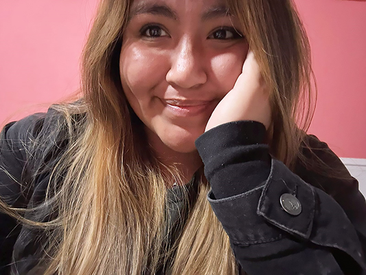

Fernanda Rodriguez
diseño y comunicación visual
conoceme un poquito mejor
Soy estudiante en la carrera de Diseño y Comunicación Visual. Estoy construyendo un conocimiento estratégico para resolver problemáticas de la comunicación visual en distintos contextos, capacitándome en la creación de identidad visual, diseño editorial y manejo fotográfico propio para cada proyecto, así tambien como el manejo de redes y la producción de las piezas para dicho sitio. Mi objetivo profesional es formarme como diseñadora capaz de transformar información en experiencias visuales claras y memorables, aportando soluciones creativas y funcionales en ámbitos editoriales, institucionales y culturales. Soy Capaz de gestionar proyectos, mejorar procesos y optimizar recursos para maximizar eficiencia y productividad. Enfoque proactivo, orientado a resultados y acostumbrada a trabajar en entornos dinámicos. Creo que el diseño es una forma de resolver problemas y transmitir sensaciones, una oportunidad de dejar una huella.

Buenos Aires _ Argentina
Fernanda Rodriguez
23 Años
14/06/2003
formación académica
instituto martha salotti
Bachiller en Comunicación
2014 - 2020
universidad nacional de lanús
Licenciatura en Diseño y Comunicación Visual
2021 - HOY (75.68 %)
habilidades
aptitudes
Me destaco por la creatividad aplicada, la sensibilidad estética y la capacidad de análisis estratégico. Tengo predisposición a nuevos saberes y disfruto del trabajo en equipo, aportando soluciones visuales claras y funcionales.